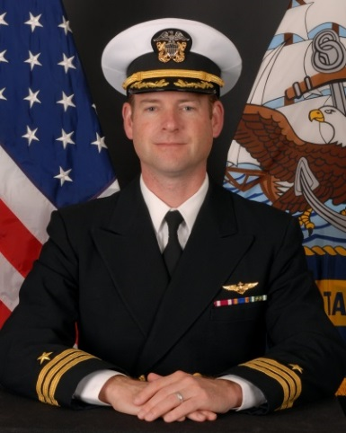

Commanding Officer
Commander Jason B. Brookham
 Commander Jason B. Brookham, of Falcon, Colorado, earned a Bachelor of Science Degree in Geology from Rensselaer Polytechnic Institute, Troy, York, and was commissioned an Ensign in 1998. In January 1999 he reported for Naval Flight Officer (NFO) training and was designated a NFO in February 2000. Following initial P-3 training with Patrol Squadron THREE ZERO in Jacksonville, Florida, Commander Brookham reported to the “Fighting Tigers” of Patrol Squadron EIGHT homeported in Brunswick, Maine.
Commander Jason B. Brookham, of Falcon, Colorado, earned a Bachelor of Science Degree in Geology from Rensselaer Polytechnic Institute, Troy, York, and was commissioned an Ensign in 1998. In January 1999 he reported for Naval Flight Officer (NFO) training and was designated a NFO in February 2000. Following initial P-3 training with Patrol Squadron THREE ZERO in Jacksonville, Florida, Commander Brookham reported to the “Fighting Tigers” of Patrol Squadron EIGHT homeported in Brunswick, Maine.
He held several positions at VP-8 including Command Fitness Leader, Aviation Survival Equipment Branch Officer, Readiness Officer and NFO Naval Air Training and Operating Procedures Standardization (NATOPS) Officer. He qualified as a P-3C Tactical Coordinator (TACCO), Mission Commander, Special Projects TACCO and Instructor TACCO. During his tour he completed deployments to Puerto Rico, Iceland and Sigonella, Sicily with multiple detachments throughout the Caribbean and Europe in support of a myriad of operations and exercises including Operation Joint Guardian, Deliberate Forge, Iraqi Freedom and Noble Eagle.
Upon leaving VP-8 in 2004, Commander Brookham reported to Commander Patrol and Reconnaissance Wing FIVE in Brunswick, Maine, in the capacity of Fleet Exercise Officer and Special Projects Department Head. While assigned to CPRW-5, Commander Brookham completed the P-3 Weapons and Tactics Instructor School and became an Advanced Readiness Program instructor. In his off-duty time he earned a Master of Business Administration from Southern New Hampshire University and completed Phase One of the Joint Professional Military Education course through the distance learning program of the U.S. Air Force Air Command and Staff College.
Commander Brookham was released from active duty and joined the “Totems” of Patrol Squadron SIX NINE at Naval Air Station Whidbey Island, Washington, in 2006. He has achieved the qualifications of TACCO, Mission Commander, Instructor TACCO, and TACCO NATOPS evaluator, and served on the ground as the Tactics Officer, Maintenance Officer and Operations Officer. He has completed numerous detachments and the first Reserve Maritime Patrol mobilization to the Seventh Fleet Area of Responsibility in 2013.
In his civilian life, Commander Brookham is a licensed Certified Public Accountant in Arizona, and volunteers with the Civil Air Patrol as a search and rescue pilot. Commander Brookham’s personal decorations include the Air Medal (individual award), Navy and Marine Corps Commendation Medal, Navy and Marine Corps Achievement Medal, and various other campaign and unit decorations. Commander Brookham resides in Mesa, Arizona with his wife, Dr. Laura Brookham, a forensic psychologist.
Executive Officer
Commander Peter M. Lauder
 CDR Pete Lauder, a native of California, graduated with a Bachelor of Science degree from the United States Naval Academy in 2000 and a Master of Arts degree from Brandman University in 2015. He will become the executive officer for the VP-69 Totems. Operational tours include VP-47 in Kaneohe Bay, HI where he served as an instructor pilot and NATOPS check pilot. For his department head tour with VP-69 he served as both maintenance and operations officer.
Ashore, he served as Fleet NATOPS instructor pilot at the P-3 Fleet Replacement squadron, VP-30 in Jacksonville, FL. Most recently he served as the Reserve VP program manager to Commander Naval Air Force Reserve in San Diego, CA.
Awards include Meritorious Service Medal, Navy Air Medal, and other personal and unit awards. Pete is married to the former Lauren Ihrig of Annandale, VA, a past P-3 instructor pilot. They have two children and live in Anacortes, WA.
Command Master Chief
Michael D. Petty
 Master Chief Petty was born in Gaffney, South Carolina, on 25 September 1973. He enlisted in the United States Navy in 1991, and attended basic training at Naval Recruit Training Center in San Diego, California, in September, 1991. Master Chief Petty completed AT “A” school and Advanced First Term Avionics A-1 Course at NATTC Memphis, Tennessee, November of 1992.
Master Chief Petty was born in Gaffney, South Carolina, on 25 September 1973. He enlisted in the United States Navy in 1991, and attended basic training at Naval Recruit Training Center in San Diego, California, in September, 1991. Master Chief Petty completed AT “A” school and Advanced First Term Avionics A-1 Course at NATTC Memphis, Tennessee, November of 1992.
Upon completion of “A” school, he reported for duty to Helicopter Special Support Squadron HCS-4 (HH60H), NAS Norfolk, Virginia and served as Work Center Supervisor and a Quality Assurance Representative. In December 2000 he transferred to Helicopter Mine Countermeasures Squadron HM-14, (MH53E) Norfolk, Virginia, where he completed two deployments to the Fifth FLEET AOR. During his tour he served as Work Center Supervisor and Maintenance Control Leading Petty Officer, and was selected to Chief Petty Officer in 2004.
In 2005 Master Chief Petty reported to Naval Air Facility Washington D.C. to serve Instructor Duty as the station Training Department Leading Chief Petty Officer. During this tour Master Chief Petty volunteered for a 16 month Individual Augmentation assigned to Naval Provisional Detainee Battalion NPDB-2, Camp Bucca, Iraq.
In 2008 he received orders to VR-57 (C-40A), NAS North Island, CA, shortly after arriving he was selected to Senior Chief Petty Officer. He served as the Operations Department Senior Chief, Quality Assurance Division Senior Chief, and the Maintenance Department Senior Chief Petty Officer. In 2010, Master Chief Petty reported to VR-64 (C-130T), Joint Base McGuire/Dix/Lakehurst, NJ as the Quality Assurance Senior Chief and the Maintenance Department Senior Chief Petty Officer and was selected to Master Chief Petty Officer.
In 2012 he transferred to Fleet Readiness Center Mid-Atlantic New Orleans, LA, serving as the Maintenance Material Master Chief and Senior Enlisted Leader. Master Chief Petty completed an Associate’s Degree in Technical Management through Embry-Riddle Aeronautical University and is a graduate from the Senior Enlisted Academy in 2011 and CMC course in 2013.
In June 2013, Master Chief Petty reported to VP-69 as the Command Master Chief. Master Chief Petty’s military decorations include the Bronze Star Medal, Four Navy and Marine Corps Commendation Medals, Six Navy and Marine Corps Achievement Medals, and various other personal and unit awards.
Master Chief Petty is married to the former Cathleen O’Donald of Gaffney, South Carolina. They have one child Emily (13). They reside in Oak Harbor, Washington.